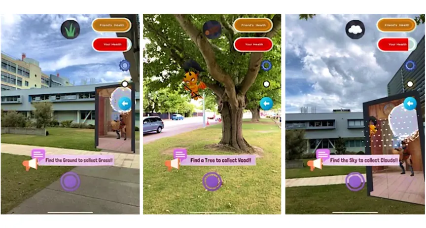
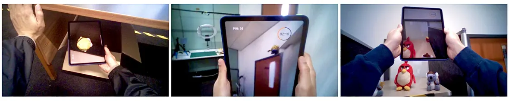
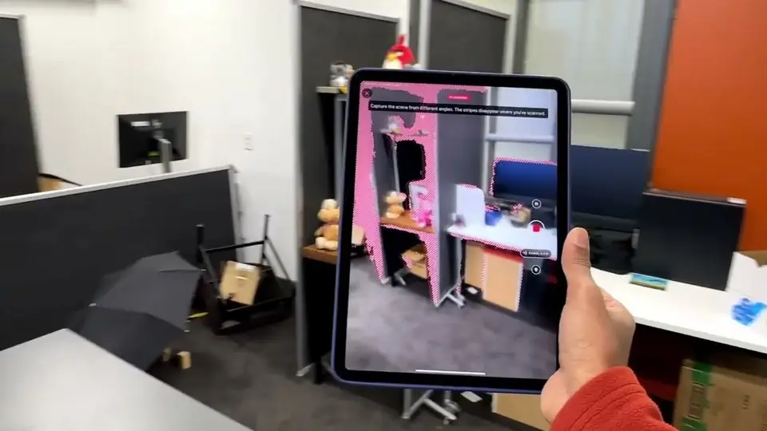
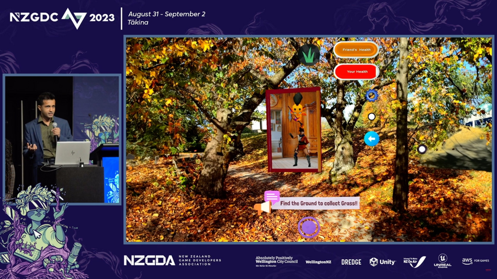

If players can switch the AR off, it isn't a mechanic yet.
Make something the game needs that only AR can do. Pokémon GO players turn the camera off because the game still works without it.
What three multiplayer AR games and 128 players taught me about playing together from apart — and the six rules I'd now build any remote AR game around.
Pokémon GO has grossed around US$9 billion in ten years. The AR camera is the part players switch off in the settings. Niantic eventually retired the basic AR mode altogether.
AR is usually “a technical gimmick or marketing tool” that could be removed “without substantially altering the experience.”Alha et al., on location-based AR games
What would it take for AR to be something you can't turn off — because the game doesn't work without it?
Remote Raids let people act on a place without ever being there. Can two people far apart genuinely feel they share one physical world?
How can AR make meaningful use of the real world for synchronous remote multiplayer play?
So when I say players looked up, they didn't just tell me — I watched their eyes do it.
One player is outdoors, collecting grass, wood and clouds by pointing the camera at the real thing. Their partner is indoors, under attack, and needs those resources to fight back. We scanned each space with LiDAR and showed the remote room three ways. Same scan, same game, same enemies — only the representation changed.
The portal feels like my friend's space is also part of my real world.Study 1 player
I didn't consciously think about it, that I was actually walking.Study 1 player — the real world had become a resource, not a backdrop
Scale changes presence. Life-size to feel there. A window to get things done.

Sees a 1:1 scan of the Seeker's room and places virtual objects anywhere in it, using thumbsticks.
Hunts through the real room with the camera, against a five-minute countdown.
Voice chat for “hot and cold” — and a moving view-cone showing the Hider where the Seeker is looking. It's the cone you steered at the top of this page.

AR against real-world hide-and-seek — same 60 players, same two rooms.
I had to look above me, behind me, basically everywhere. It was exhausting but fun.Study 2 player
Real-world hiders put things under desks and behind chairs. AR hiders went to the ceiling, floated objects in corners, tucked them inside the light fitting.
The eye-tracking showed it too: in the real game, Seekers scanned at waist height. In AR, their gaze scattered upward — doorframes, ceilings, mid-air. Changing where people look changed how they think. That's a mechanic.
The diagram is an illustration of the spots described in the study, not a plot of the data.
Bold, high-contrast objects were chosen 1.6× more often in AR.
In real hide-and-seek, the most-hidden object was a dull grey koala; the bright yellow Minion was picked once. In AR it flipped — the Minion was picked fifteen times. In a game about concealment, players chose the most visible object in the pool.
“It stood out more, so it was easier to place where I wanted.”
Placement used fiddly on-screen thumbsticks, so players optimised for the controls — even when it made their strategy worse.
Rule five · Players adapt to your controls firstWhat made two rooms feel like one? Not photoreal avatars. A grey cone showing where your partner is looking, and a voice line.
I live abroad, so it was such a cool way to feel connected to my sister back home.Study 2 player
It felt like we were kids again.Study 2 player
A view-cone and voice go a long way. Try those before building full avatars.
So far AR had been the medium. In the last game we made it the ruleset: mechanics that are impossible without AR, and impossible to switch off. The Hider stopped being a spectator and stayed in the game all round.
Pinch to shrink it, colour-match it to the chair. Tiny, in a corner, hiding in plain sight.
Hide three clones of an object — only one of them is live at any moment.
The Seeker's cone gets close — you flick the live target to another clone. A particle trail keeps it fair.
Two minutes to hide, five to seek. It stretched players — and split them.
If I see them getting close, I'll just reassign the target. It felt a bit sneaky, but that was the point.Study 3 Hider
Makes it competitive, so it won't take an eternity.A “give me the clock” player
If I'm playing with friends I'd rather not have that stress — we just laugh and hide things.A “let me chill” player
Let players choose the pacing. An optional timer, toggles and a practice round.
And the big one: everything here is first-session data. We don't yet know what survives the novelty.
Make something the game needs that only AR can do. Pokémon GO players turn the camera off because the game still works without it.
Life-size to feel there. A window to get things done.
Players hid objects on the ceiling and in mid-air — spots the real game doesn't have.
Try those before building full avatars. In Game 3, sixteen players said the cone was enough; ten wanted a fuller avatar.
Watch what they choose, not just how they score. Fiddly input turned a concealment game into a visibility game.
An optional timer, toggles and a practice round. Players split almost evenly (9 vs 8) between “give me the clock” and “let me chill”.
Putting my living room in your park is no longer the hard part. Designing the reason to is — and that part is ours.
Designing Shared Worlds Across Distance — NZGDC 2026, Auckland.

Augmented Hide-and-Seek — IEEE VR 2025 video (Game 2).

The AR Game Dev Rant — NZGDC 2023 panel.
The ones I get asked most. Didn't get to ask yours on the day? Send it below and I'll answer by email.
In some ways, better. A headset fixes the arm fatigue — four players reported it from holding an iPad up at the ceiling. But Overlay mode already blocked out enough of the real room to disorient three players, so on a headset, occlusion and physical safety become the design problem to solve first.
Unity NetCode with Lightship networking, over a dedicated Wi-Fi network, running at 60 FPS on both devices. The particle trail doubles as a fairness signal: when a hidden object swaps, both players can see where it was.
Active swapping felt sneaky — one Hider said exactly that — but players accepted it as fair, because the particle trail showed where the object had been.
Every study was played in pairs, and both hide-and-seek games ran indoors. Groups, and hide-and-seek outdoors, are the obvious next step.
Honestly, we don't know yet. Everything in this talk is first-session data. A longitudinal study is next.
The slides are up — download the PDF. If something from the talk changes what you build, or you have a question you didn't get to ask, I'd love to hear it.
Kia ora — you scanned the slide. Thanks for staying to the end. Everything from the talk is on this page.
Thanks for taking the time. If you asked a question, I'll reply by email. In the meantime:
Were you in the room? Rate the session in the NZGDC app (access code NZgame26) — it takes ten seconds.
The NZGDC 2026 talk as a keynote or conference talk, or a hands-on half-day workshop for your designers.
Invite me → Before you buildTwo to three weeks to decide whether a shared AR idea deserves a budget, and what the smallest convincing version is.
How it works → After you buildThe same methods as these studies — presence, comfort, player experience — applied to your game.
How it works →Dr. Yasas Sri Wickramasinghe is an augmented reality researcher, senior lecturer and software engineer based in Christchurch, New Zealand. A Postdoctoral Researcher at HIT Lab NZ, University of Canterbury, he studies how multiplayer AR can connect people and places across distance.